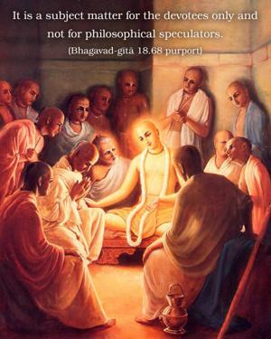

For one who explains this supreme secret to the devotees, pure devotional service is guaranteed, and at the end he will come back to Me.

Generally it is advised that Bhagavad-gītā be discussed amongst the devotees only, for those who are not devotees will understand neither Kṛṣṇa nor Bhagavad-gītā. Those who do not accept Kṛṣṇa as He is and Bhagavad-gītā as it is should not try to explain Bhagavad-gītā whimsically and become offenders. Bhagavad-gītā should be explained to persons who are ready to accept Kṛṣṇa as the Supreme Personality of Godhead. It is a subject matter for the devotees only and not for philosophical speculators. Anyone, however, who tries sincerely to present Bhagavad-gītā as it is will advance in devotional activities and reach the pure devotional state of life. As a result of such pure devotion, he is sure to go back home, back to Godhead.